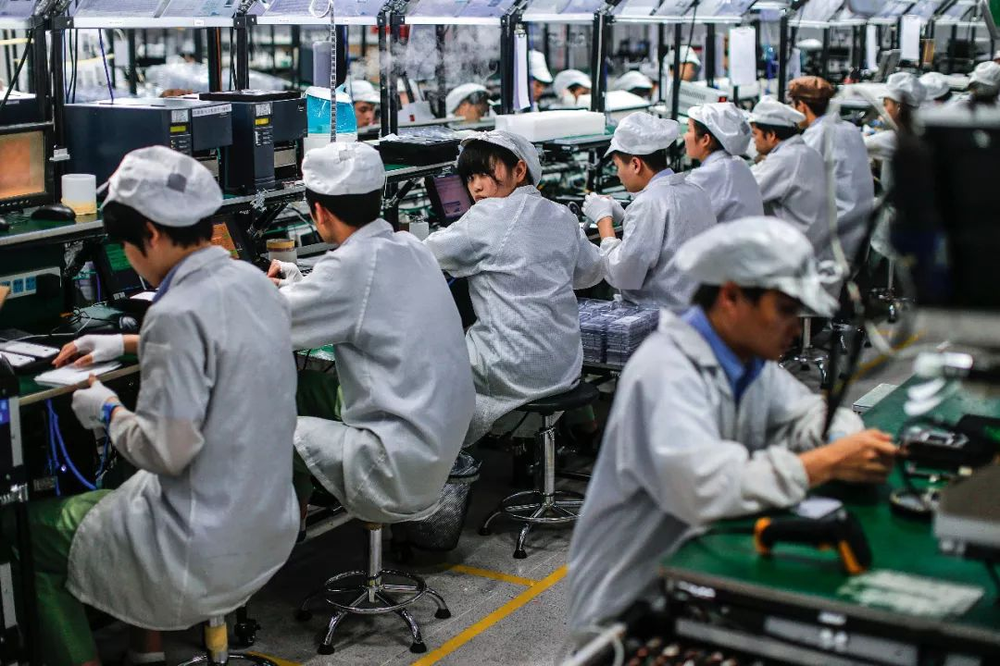
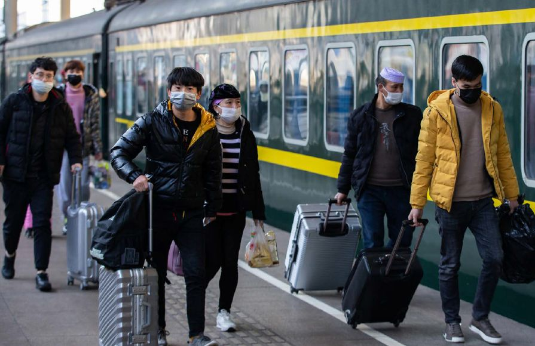
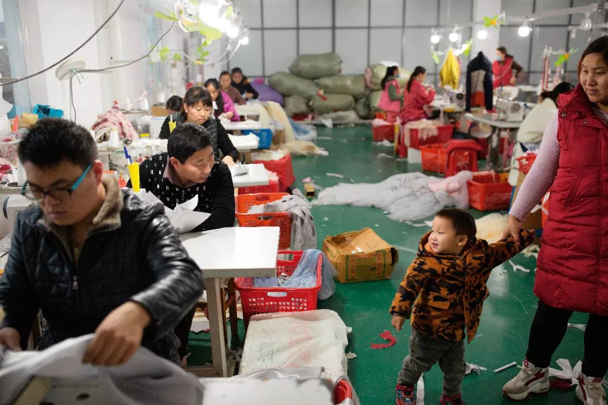
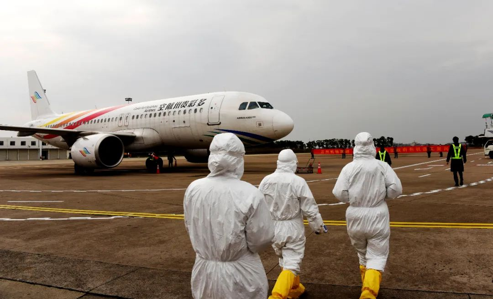
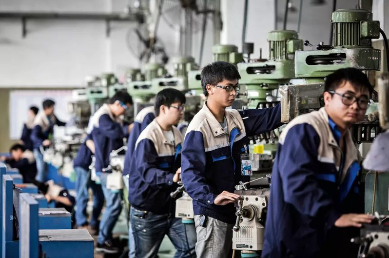
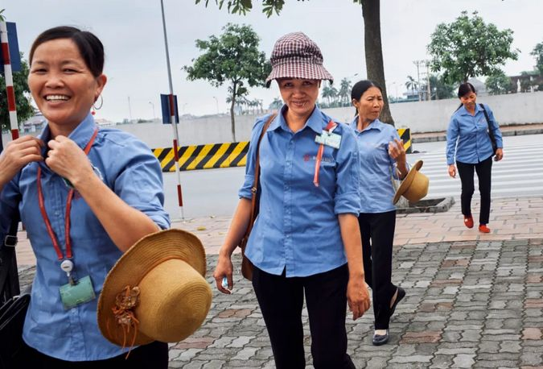
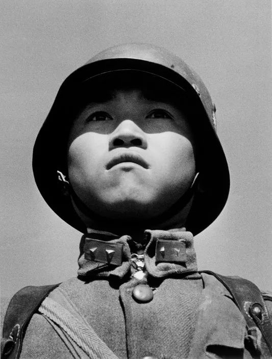

开工了，可我没口罩
原文链接 备份链接 以下文章来源于AI财经社 ，作者AI财经社作者 开工前最忧伤的段子可能是，“今天戴着口罩去买口罩，口罩没买到，还损失了一个口罩。” 2月10日起，部分企业陆续复工，宅在家里即为国家做贡献的使命宣告终结。当下的主要矛 …
复工不是简单地将员工召回，除了人员复工之外，防疫、运输、订单、人力、供应链都是需要考量的因素，牵一发而动全身。在制造业重镇形成的完整产业链，也让当地的复工成了一项综合工程。
记者 | 黄子懿
艰难复工
▲▲▲
“2019年圆满收工。”2020年1月11日，56岁的东莞格瑞家具厂老板曾武祥发了一条朋友圈。照片上，他那两层共3000多平方米的厂房门口，整齐有序地排列着几堆包装好的货物。一辆印着英文字母的15米半挂车停在厂房口，等待着叉车和工人将这些纸箱装货，箱子里装的曲木桌椅等家具将就此发往欧美市场。
这是曾武祥年前的最后一批货。做完这一单后，家具厂就将进入春节假期，40多个工人几乎都回了家，曾武祥也自驾从东莞回到了江西吉安的老家。如果不出意外，按照珠三角往年的规律，正月初十前后，工人们就将有序回来复工。“最晚肯定不超过元宵节。”曾武祥说。

突如其来的疫情改变了这十几年如一日的节奏。直到2月20日接受采访这天，曾武祥的工厂还没能复工。此时距元宵节已过去近半月，他每天吃住在厂区，偶尔靠睡觉打发时间。“我现在是在自我隔离，你哪知道外面的人是从哪里来的？”曾武祥对我说。东莞现在返程人员在逐步增多，他怕有感染风险，尽量不出厂区。
工厂更离不开曾武祥。疫情扩散之际，他意识到事情的严重性，赶在老家封村前一天自驾回了东莞。2月中旬，家具厂所在的东莞大岭山镇传出可以复工的消息，前提是得做好防疫、通过检查。于是，曾武祥写完复工申请材料，将这些材料交给厂区工业园所在的村，再由村里交给镇，镇里派人检查通过后方可开工。为此，曾武祥花了几千元，将一个多月前还堆满出厂货物的厂房，摆上了6大箱84消毒液。
2月10日是广东省规定的复工时间，“世界工厂”东莞市有4491家企业开工，其中制造业企业占80%，很多是具备医疗物资生产资质的企业。东莞市人社局介绍，复工复产要采取分批的流程，一步接一步来，“复工不是扑面而来全都到位的”。截至2月20日，曾武祥所在的园区还没有一家企业能复工，他说：“大家都在等检查。”
这些检查包括“四个到位”，即防控机制、员工排查、设施物资、内部管理，同时还要做到“八个一”，对每位员工做到健康状况检测、测体温、戴口罩、设隔离留观室等八项，还要求召开员工安全大会等并拍照为证。曾武祥将厂区宿舍顶楼腾出来5～6间房子，专门做了隔离区。“口罩我们有，因为平时做家具，库里存着几千个工业口罩。”曾武祥说，2月21日，镇上来人检查后同意复工，他心中的一块石头落了地，赶紧通知星散各地的员工回厂。

截至2 月21 日，山东、浙江、江苏、福建等华东地区复工率都超过70%。
疫情让全国各行业都陷入了停摆。无论是对哪个行业而言，从停滞走向恢复，都并非一件容易的事情，一个很重要的原因就是防疫物资无法到位。“物资真的非常难买。”成都一家互联网公司的负责人说，他们从2月初就开始求购各类物资，“绞尽脑汁尝试了各种渠道”，甚至在听闻比亚迪要生产口罩后也主动联系，却被告知不外售。最后在政府协调下，他们才从海外多个渠道购买储备了1万只口罩。按照每个员工每天两个的量，这些物资可供180人的公司坚持一个月。等筹到防护物资，复工日期又被推迟了一周。
更大的困难在于人手不足。曾武祥所聘请的工人多来自江西、湖北、湖南等地，疫情较重，当地封村封路，能否回来还很难说。他已让湖北和江西九江的员工暂缓复工，“反正也回不来”。为了解决复工过程中人力资源紧缺的问题，广东、浙江、福建、江苏等多地都开通了点对点专车专列甚至包机服务，为大企业工人返岗复工运送人力，上演另类的“抢人大战”。
比如，浙江湖州从2月16日起通过包机、包车等方式，在48小时内接回了1.6万名工人，其中包括3000名新招员工，他们能享受到一次性1000元的生活补助。

为了缓解用人紧张的难题，很多地方派出了专机专列接回工人（摄于2月18日）
一家协助湖州政府包机引才的人力公司负责人说，整个过程中，最难的一环就是工人如何从村镇里出来。政府承担了包机返工所有费用，但这笔钱花得划算：在春秋航空包机从昆明到上海的价格是46万元，“人社局（领导）算了一笔账，员工一天不到位，企业每日损失上百万元”。
不过这些包机包车，多集中在各地政府扶持的大中企业中，小企业很难有机会享受。曾武祥说，即使正在慢慢复工，他内心也很焦虑：每月要缴房租7万元、养活40个工人，年前还采购了30万元的进口木材原材料，准备年后开工大干一场，但上游目前却基本没有订单。
“这样我还是无法开工啊！”曾武祥说，家具厂平时主要负责加工曲木家具，上游企业有其他家具厂、外贸公司等。一家外贸公司负责人则对我说，他们目前订单也很少，主要是海外客户考虑到疫情影响而没有下单。如今，曾武祥的账上能储备的资金不到15万元，已经很难给员工发全款工资，“不然我可能一个月都坚持不了了”。
“关键是要先动起来”
▲▲▲
经济停滞，表现在流通环节上就是物流数据惨不忍睹，也波及相关的互联网公司。凯京科技是一家运营数字化货运平台“斑马来拉”的科技企业。2015年成立以来，公司几乎每年业绩都是翻倍增长，三年来得到了蚂蚁金服、红杉资本等投资机构共12亿元的三轮融资。2020年过年前，公司立下了今年第一季度业绩翻倍的目标。1月31日，公司高级副总裁陆洋往后台数据一看，业绩只有往年同期的10%。
凯京科技的货运平台上对接共两万家中小物流企业，疫情期间除了零星的运送医疗物资外，其余运力几乎为零。当天很多投资人打来电话，询问疫情影响。陆洋说，每年春节后本是物流业旺季，2月10日后，平台上物流企业渐渐有了复工迹象，但也只有平时运力的20%～30%，集中在快销、生鲜、医疗等行业的省内运输上。他们在上海最大的合作伙伴之一预计一季度收入将减少近5000万元。“房租、人工成本这些，眼睛一睁一闭，一天可能就是一两百万消耗出去了，再大的物流公司也扛不住。”陆洋说。

常规生产停摆之际，一些企业的生存之道是先着手生产医用物资。在东莞，很多企业开始转产口罩和消毒液；而在湖北之外疫情最严重的浙江温州，很多服装厂的工人自2月就一直没有停歇。温州艾乐服饰有限公司董事长李伯钦对我说，疫情蔓延开来后，温州市政府召集各大协会开会，号召转产医疗物资，解决口罩、隔离衣和防护服难题。服装商会当场就有20～30家报名表示愿意生产，其中包括李伯钦。
李伯钦的公司主攻高端服饰，主要面向海外市场，服装制作基本都靠工人手工完成，有近200多个工人，但过年留守的工人只有10～20个，为了生产口罩目前全员动员了起来。李伯钦说，由于工人没有到位，生产口罩的投入与产出，跟平时比其实是“微乎其微”。“如果机器一天能做10万个口罩的话，现在可能只能做3000～5000个。”李伯钦说，这些口罩都是纳米材料，用个两三天没问题。

特殊时期，一些企业的应对之策是改为生产口罩、防护服等医用物资。
春节前，李伯钦购进了价值不菲的海外原材料，如今积压在仓库，原因在于海外订单的减少。“海外很多客户的风险意识很强的。”李伯钦说，疫情蔓延之初，他的很多欧美客户就每天发邮件、打电话来问，他只能告诉他们疫情可控。按照他的估计，温州可能要3月上旬才能逐渐恢复元气，这比正常年份少了20多天。“服装行业有很大季节性，这20天就意味着我们春装这块基本上是没有任何收入了，只有等明天再上。”李伯钦说，“表面上看是错过了20天，其实是错过了一整年。”
这是李伯钦入行以来从未体会过的艰难时刻。他2008年创立了艾乐服饰，在激烈的竞争中在高端服装市场上找准了自己的定位，还给一些国际知名品牌做代工，是温州服装商会的匠心制造企业，年产值约3000万元。但自2018年中美贸易战以来，产值开始下滑约有30%，如今疫情加码的双重困难下，他估计产值还将下降至平日的50%～60%。
“因为客户是会规避风险的。”李伯钦说，一般一个海外订单过来，他们接到订单之后3～4个月会交货，客户要考虑这期间的风险把控，以防届时零售端“开天窗”。从2018年中美贸易战开始，客户开始将部分订单交给其他厂商，以分摊风险。“好比篮子里的鸡蛋，他们匀了一点出去，放到另一个鸡蛋篮子去，我们的订单就减少了。”李伯钦说，所以他要先动起来，哪怕只是生产口罩，“如果客户看你今天停摆，明天还是停摆，信心就会动摇。关键是要先动起来。”

2月22日，浙江台州机场，防疫人员准备上飞机测量返工人员体温。
更重要的是，自己先动，才能带动行业供应链的配套工程动起来。“我动供应商才能动，不然他也会想到我可能会换供应商。”李伯钦说，这种情况在温州这种轻工业发达的地方很明显，当地的服装、皮革、汽摩配件等在多年的发展里积累下深厚的产业基础，配套体系十分发达——这其实也在某种程度上增大了复工难度，产业链条内需要上下游的同时协作，才能逐步复工乃至做满产能。“如果供应商们动不起来，我哪怕100道工序99道都齐了，有一道不行，我还是复工不了。”李伯钦说，工厂内还积压着一批货物，只差最后一道工序就能完成。
中国制造正是这样，从来不是指某一个具体的企业或行业，而是指一个完整的、成熟的全产业链，拥有极其强大的上下游配套能力，彼此精细分工、环环相扣做出成品。一旦产业链停滞，没人能独善其身。李伯钦说，靠着这种成熟的产业链，温州服装制造的成本普遍比其他地方低，所以海外客户才愿意来。“比如单独服装的出货量可能装不了几个集装箱，但可以和皮革、汽摩配件一起装配发货，这样成本就降下来了。”
东莞的制造业也正是这样，所辖32个镇围绕着某些核心企业聚集成特定的产业集群，形成“一镇一品”的特色。曾武祥所在的大岭山镇主做家具，有“中国家具出口第一镇”之称。曾武祥原本也是江西某国企员工，90年代下海后最早在江西做健身器材，2003年后搬到大岭山镇。“这样和客户离得近，成本也更低。”曾武祥说，木质家具的工序少说也有5～6道，需要和上下游企业配合方可完成。

成体系化的上下游产业链，也造成了较长的资金回笼周期。与餐饮、旅游等现结的服务行业不同，制造业等行业现金流更加紧张。曾武祥说，一单订单从采购原材料开始到客户结账，短则90～120天，长则1～2年。李伯钦则说，服装业的资金回笼速度得按照季度算，“至少得3个月”，外贸的流程可能得长达4～6个月。
作为各行业之基础，物流业也是如此。在抗击疫情的过程中，陆洋和同事们帮助组织了一些医疗物资的运输，很多企业都表示现金紧张，运费暂时付不上，让他们帮忙垫付。“物流业的利润特别薄，平均毛利率可能就是3%～5%，本来就是需要通过高周转去带动盈利的，所以周转一旦慢下来之后，影响是非常大的。”陆洋说，物流企业永远有至少3个月的资金垫在里面，且固定资产消耗更大，“现金流稍微不注意就断掉了”。
凯京科技创始人张世伟是湖畔大学的学员。2月7日，湖畔大学班主任在微信上号召同学们讨论复工计划，来自各行各业的同学们在商讨中达成共识：若要复工，必须让供应链先流转起来，物流业必须首先复工，“如果物流业不复工，整个供应链流转不起来，经济就无法运转”。于是1月底，凯京科技就开始筹备复工。
行业新洗礼
▲▲▲
实体产业的复工，需要人力资源与供应链等的支撑，而互联网行业的重启，则需要承载量足够大的网络为基础。多数互联网企业最初都启动了在家办公的模式，但开局即迎来了不顺。
“最开始用企业微信，崩溃；后来用腾讯会议，也崩溃；再用钉钉，还是崩溃。”前述成都某互联网公司负责人说，线上办公难度很大，由于在线用户过多，很多软件平台的服务器最初都难以承载，开会经常掉线，且难以监督，效率可能只有平时的70%～80%。“有时候说着说着就没有声音了，我们就发明了一些暗语和手势交流。”
2月17日，凯京科技总部里有约200余人，70%的人员开始大规模复工，30%在家办公，这比例要超过当时多数互联网公司。由于线上会议的不稳定，大家尽量缩短了开会时间。“平时开会可能一开就是两小时，现在不可能这么长时间了，某种意义上也是提升了我们的效率。”陆洋说。
公司复工之初，根据疫情期间的特殊形势，紧急开发了“无接触式货运服务”，即物流企业和司机可以在APP上接货、送货、GPS定位等等，当货运完成后可以通过线上进行电子回单确认，以代替传统的纸质回单，进而完成线上支付，形成闭环。这就避免了司机在装货卸货时与他人接触，降低感染风险。“在江浙沪很多地方，司机只要出了一趟省回来也得隔离14天。”陆洋说。

支付模式也更新到现结。“现在是特殊情况，每一单当天确认，当天就做业务结算。”陆洋说，这样更能提高物流企业的积极性，将资金流转速度做快。“上游的制造业、快消品业等等，他们现在也缺人做物流，也愿意把付款周期缩短，所以我们紧急改进了模式。”此外，很多司机由于封村暂时无法返工，一些物流企业为了正常运转，特殊时期开始大量招募外聘个体司机，后者也更愿意按照每单运输业务结算费用。
这是互联网企业利用科技手段解决在复工期间的种种痛点的一种尝试。陆洋说，物流行业本身就一直存在信息化程度低、财务透明度低、管理不规范等问题，在某种程度上导致物流成本居高不下。为此，他们利用科技手段探索对其进行改造，引入SaaS系统，搭建平台，利用算法和数据为物流公司匹配货源等等，试图对行业进行信息化与数字化改革。“部分物流公司由于信息化数字化基础不足，算账不够准确。我们遇到过年营收过亿的大物流公司老板，不清楚自己旗下车辆每年固定资产开销多少，每年账目盈亏多少。”陆洋说，很多老板只知道自己似乎赚了很多钱，但实际上使用信息化系统管理后，会发现每年还会有亏损。
某种意义上，很多制造业的中小企业也存在类似问题。曾武祥坦承，自己对很多细致的账目支出并不能烂熟于胸，“这个得问会计”，也没有任何信息化管理手段。其交易模式仍然是一种基于人与人之间的信任，而非技术与数据支撑的信用。“我们管理得还是很粗放的。”
在互联网企业利用技术手段应对疫情时，制造业的企业家们却觉得“人是最重要的”，无一不为员工如何回来操碎了心。李伯钦说，有很多老员工是从2008年一直跟着他的，多数员工都有至少超过5年的工龄。在高端服饰制作领域，手工技巧不可或缺，对工人的技能有极高要求。“服装的缝制有一定的独特手艺与技术，熟能生巧，做得越久越稳定，是需要时间沉淀的。”李伯钦说，温州疫情导致工人无法返程，这让很多服装企业感到被动，“重新再去培养这些工人，是需要很大时间成本的”。
“只要人在，一切都好说。人的因素更加迫切。”李伯钦说，当前企业的重点是不顾一切做好防护措施。温州是湖北之外疫情最严重的地区，政府负责厂外，企业家控制厂内。李伯钦的厂区如今每天消杀，员工尽量不让外出，在厂内自我隔离。他每天监测在外员工健康状态，敦促他们多看看书和陪陪家人，给有房贷车贷压力的员工提前预支一部分工资。
李伯钦说，自己承担不起企业因发生疫情而造成的损失，“哪怕倾家荡产都有可能”。“如果是我这里出现了疫情，那客户会觉得这是一个危险的公司，员工也不会回来。纵然我有千百万的资金储备，也是一样没用的。”李伯钦说，机器不在没关系，厂子倒闭了也没关系，可以重新开一家公司，“只要人在就好”。

李伯钦认为，公司在2018年之前一直比较顺风顺水，疫情也正好给了他们一次反思与改变的机会，去开拓一些新产品和市场，形成新的增长点。“危机其实是让我们把原来认为的一些成功的东西打破掉，去重新再建立起一套平衡出来。这是我们作为企业经营者要去思考的。”
目前，在浙江、上海等地，都通过“健康码”采用了返工人员报备制，即通过互联网公司加急开发的一个实时动态二维码，即可知道健康码申请者是否与确诊或疑似病例共乘交通工具、是否来自重点疫区等等。这也是让李伯钦感到欣慰的地方，如此工程必然只有在政府支持下才能由互联网大企业启动，中小企业做不到。
而对于一些互联网企业来说，高增长的期望也必须得下调。陆洋说，最初看到疫情下物流业的惨淡之后，投资方多次组织了线上会议，为他们引荐资源渡过难关。而他们也制定公司年度成本缩减计划、人力资源结构优化预案以及重点市场拓展策略等等，原有的业务翻番目标，可能会被下调至增加50%。“经营单元要尽量划小划细，然后在最小的经营单元里面，我们要鼓励有能力的团队去形成一个最小化利润单元。能在这个区域实现盈利，我们会给到更高激励，但如果说这个单元里还是属于一种高投入的烧钱状态，这些区域我们会坚决关掉。”
通过这次疫情，他们在数字化沟通和办公手段上也有了更多探索，觉得未来必须要坚持实施下去。“量化考核可以做得更细，因为人毕竟不在你的面前。”陆洋说，“疫情也是一次机会，正好能够把企业整个架构和模式梳理得更清晰一些。”
作者档案

**黄子懿
**
做好打持久战的准备
26分钟前


三联生活周刊
个人微博：@杰货
大家都在看
⊙文章版权归《三联生活周刊》所有，欢迎转发到朋友圈，转载开白请联系后台。未经同意，严禁转载至网站、APP等。
点击下图，下单新冠特刊
「准备复工」

*点击阅读原文，进入周刊书店，**购买**【新冠肺炎专刊组合】*
长按二维码向我转账
受苹果公司新规定影响，微信 iOS 版的赞赏功能被关闭，可通过二维码转账支持公众号。
原文链接 备份链接 以下文章来源于AI财经社 ，作者AI财经社作者 开工前最忧伤的段子可能是，“今天戴着口罩去买口罩，口罩没买到，还损失了一个口罩。” 2月10日起，部分企业陆续复工，宅在家里即为国家做贡献的使命宣告终结。当下的主要矛 …
原文链接 备份链接 _ 2月10日这个周一，中国多个省市迎来了春节后第一个工作日，虽然比原定假期已推迟一周，但政府、企业和个人所面临的疫情防控压力都不小。当前，湖北省仍需要着力抓好疫情防控，其他地区也需要做好防控的同时有序恢复生产 _ …
原文链接 备份链接 经济观察报 记者 种昂 2月4日，一批5万只口罩由一辆货车缓缓运进了江苏某汽车配件工厂的大门，刘天元总算松了一口气。作为这家民企高管兼内部疫情防控的副总指挥，他肩负着企业复工的重担。此时，刘天元似乎看到了复工的希望。 …
原文链接 备份链接 既要严防死守又要抓紧复工 共克时艰，都不能当“铁公鸡” 文/闫肖锋 *发于2020.3.9总第938期《中国新闻周刊》* 新冠病毒这么一扫，先是零售业、餐饮业、旅游业，现在轮到制造业扛不住了。“中国制造”乃立国之 …
原文链接 备份链接 本报记者 张家振 山东临沂 报道 随着全国陆续进入复工复产攻坚期，深处疫情中心的湖北省相关工作的谋划部署也备受关注。根据目前政策，湖北省内各类企业先按不早于3月10日24时前复工。 湖北省内地市州封城的时间不断延长，企 …